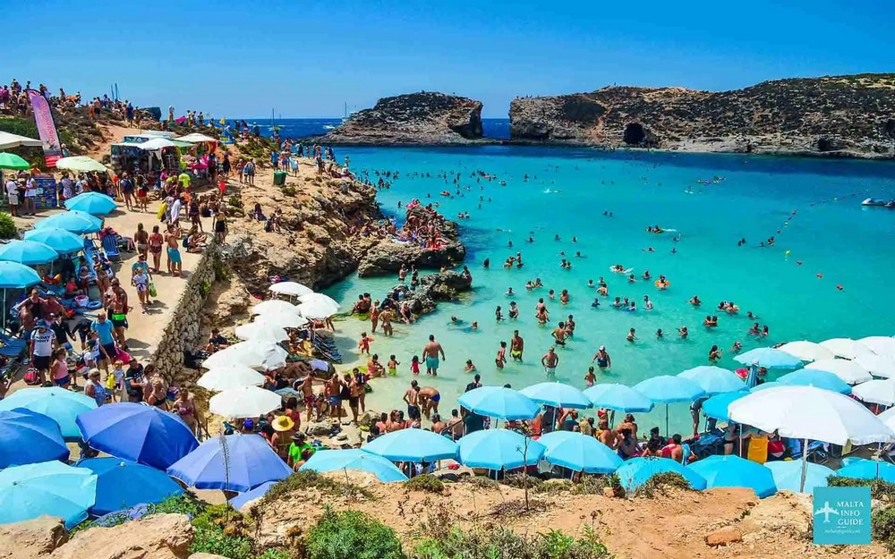
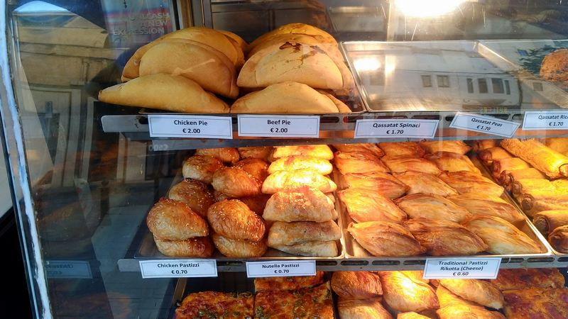
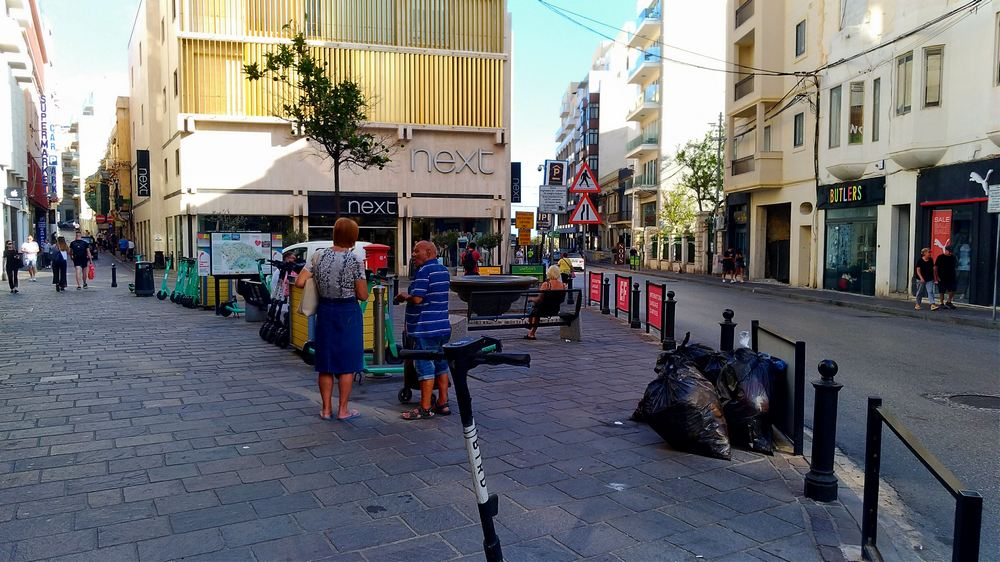

INTRODUCTION: With top touristic destinations such as Italy, Greece, Spain and even France out of favour for various reasons (forest fires, pandemic, natural catastrophes, terrorist activities, escalating hotel costs, etc.), Malta offers a good alternative to travellers looking for sun and a peaceful holiday without having to worry too much about terrorist attacks or pickpockets and thieves.


Malta has been a member of the European Union since 2004. EU citizens can travel with an identity card and use the euro without needing currency exchange.